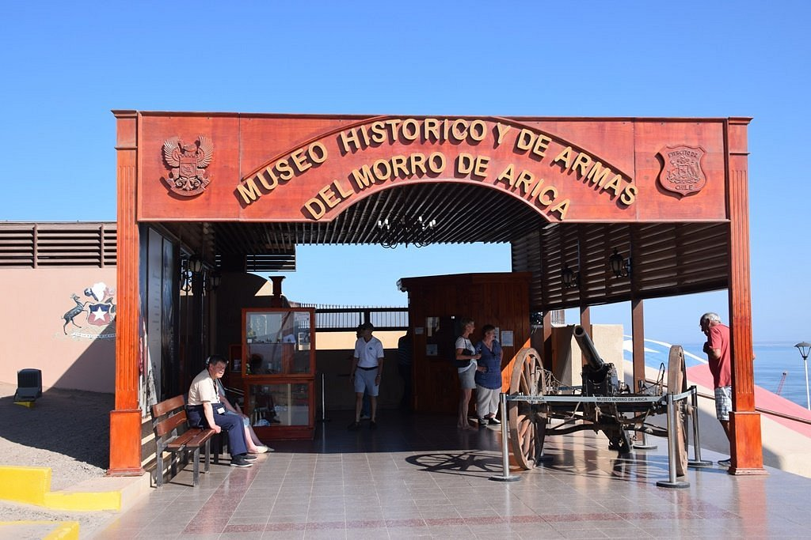
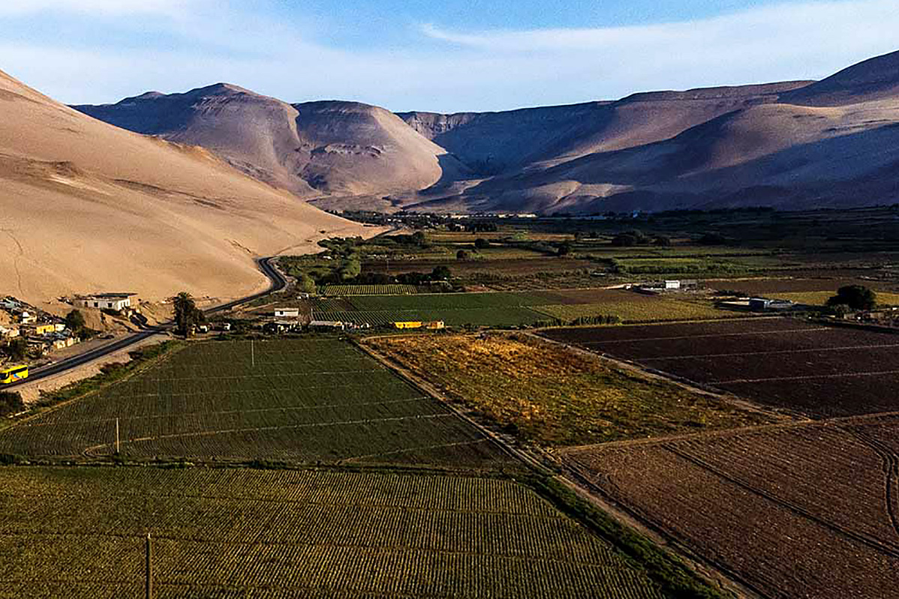

| inicio | galeria | contacto |
Arica y Parinacota
Arica es una ciudad puerto y comuna chilena, capital de la región de Arica y Parinacota, ubicada en el extremo norte del país, cerca de la frontera con Perú. Es conocida como la "Ciudad de la Eterna Primavera" debido a su clima templado y estable durante todo el año, con una temperatura promedio de 18 °C

